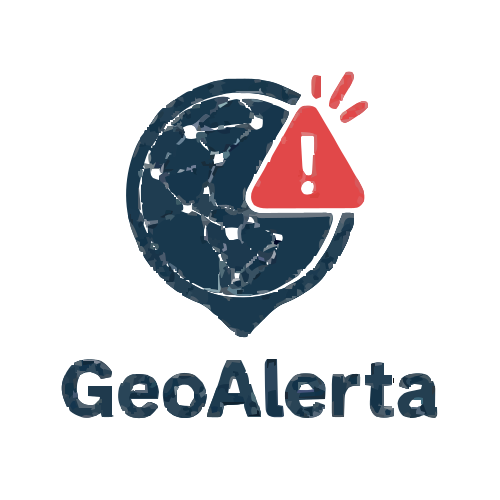

<!DOCTYPE html>
<html lang="pt-br">
<head>
  <meta charset="UTF-8" />
  <title>GeoAlerta</title>
  <link rel="stylesheet" href="./assets/style.css" />
  <link rel="icon" href="./assets/images/favicon.ico" favicon">
  <link href="https://cdn.jsdelivr.net/npm/bootstrap@5.3.2/dist/css/bootstrap.min.css" rel="stylesheet">
</head>

<body>
  <div class="avisos-box" id="avisosBox" style="position: fixed; top: 20px; right: 20px; width: 300px; z-index: 1000;">

  </div>
  <script>
  const textosAviso = [
    { msg: "⚠️ Chuva forte chegando em sua região.", tipo: "warning" },
    { msg: "🌬️ Atenção: rajadas de vento acima de 60km/h.", tipo: "danger" },
    { msg: "🔥 Tempo seco aumenta risco de incêndios.", tipo: "danger" },
    { msg: "🏚️ Novo abrigo aberto no bairro Esperança.", tipo: "info" },
    { msg: "🌪️ Possibilidade de ciclone à noite.", tipo: "warning" },
    { msg: "🏥 Atendimento médico emergencial disponível no centro.", tipo: "success" },
    { msg: "🌊 Alerta de enchente em áreas próximas a rios.", tipo: "danger" },
    { msg: "❄️ Frio intenso previsto: cuidados com a população vulnerável.", tipo: "info" },
    { msg: "🧭 Saiba quais abrigos têm perto de você.", tipo: "primary" },
    { msg: "🚨 Evite transitar em áreas de risco.", tipo: "danger" },
    { msg: "📱 Mantenha seu celular carregado para emergências.", tipo: "info" },
    { msg: "🧯 Kit de emergência: verifique se o seu está completo.", tipo: "info" },
    { msg: "🛰️ Monitoramento indica risco de deslizamento.", tipo: "warning" },
    { msg: "🛑 Alerta de tsunami em regiões costeiras.", tipo: "danger" },
    { msg: "🚧 Rotas de fuga atualizadas, veja no mapa.", tipo: "primary" },
    { msg: "🏫 Abrigo aberto na Escola Municipal Monte Azul.", tipo: "success" },
    { msg: "🌀 Formação de granizo detectada na zona oeste.", tipo: "warning" },
    { msg: "🌡️ Calor extremo: evite exposição ao sol.", tipo: "danger" },
    { msg: "📻 Sintonize a rádio local para instruções ao vivo.", tipo: "info" },
    { msg: "📍 Veja os pontos seguros mais próximos no mapa.", tipo: "primary" },
    { msg: "💧 Distribuição de água potável no abrigo da Vila Nova.", tipo: "success" },
    { msg: "📦 Ajuda humanitária chegando ao bairro Novo Horizonte.", tipo: "success" }
  ];

  function mostrarAviso() {
    const caixa = document.getElementById('avisosBox');
    const aviso = textosAviso[Math.floor(Math.random() * textosAviso.length)];

    const novoAviso = document.createElement('div');
    novoAviso.className = `alert alert-${aviso.tipo} alert-dismissible fade show`;
    novoAviso.role = 'alert';
    novoAviso.innerHTML = `
      ${aviso.msg}
      <button type="button" class="btn-close" data-bs-dismiss="alert" aria-label="Fechar"></button>
    `;

    caixa.appendChild(novoAviso);

    setTimeout(() => {
      novoAviso.classList.remove('show');
      novoAviso.classList.add('hide');
      setTimeout(() => novoAviso.remove(), 500);
    }, 8000);
  }

  function iniciarAvisos() {
    mostrarAviso();
    setInterval(() => {
      mostrarAviso();
    }, Math.random() * 10000 + 10000);
  }

  iniciarAvisos();
</script>

<script src="https://cdn.jsdelivr.net/npm/bootstrap@5.3.2/dist/js/bootstrap.bundle.min.js">
  
</script>

</body>

<header>
  <div class="logo">
    
  </div>
  <div class="busca">
    <input type="text" id="search" placeholder="Selecione uma cidade" readonly>
    <ul class="opcoes">
      <li data-mapa="mapa-sp">São Paulo</li>
      <li data-mapa="mapa-recife">Recife</li>
      <li data-mapa="mapa-bh">Belo Horizonte</li>
      <li data-mapa="mapa-rj">Rio de Janeiro</li>
      <li data-mapa="mapa-rs">Porto Alegre</li>
    </ul>
  </div>
</header>

  <main>
    <div class="mapa-container">
      <div class="mapa-conteudo">
        
        
        
        
        
      </div>
      <div class="mais">
        <ul class="opcoes">
          <li>Alagamento</li>
          <li>Deslizamento</li>
          <li>Terremoto</li>
          <li>Incêndios</li>
          <li>Tsunami</li>
          <li>Ciclone</li>
          <li>Granizo</li>
          <li>Nevasca</li>
          <li>Seca</li>
        </ul>
      </div>
    </div>
  </main>
    </div>
  </main>
  <footer>
    
    <p>&copy; 2025 GeoAlerta. Todos os direitos reservados.</p>
  </footer>
  <script src="./assets/script.js"></script>
</body>

</html>
